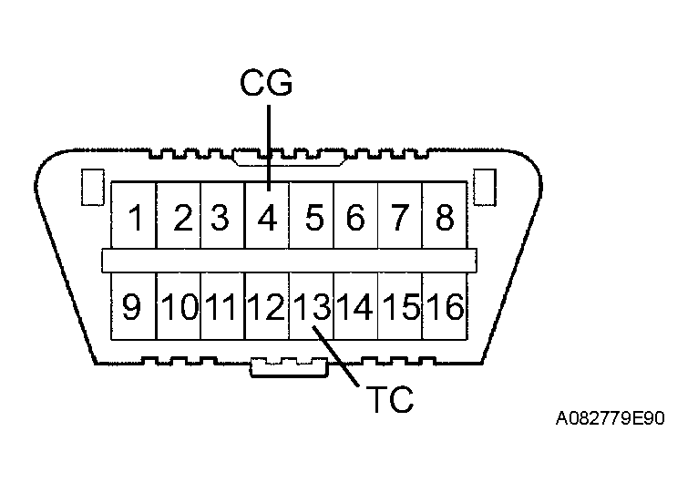

DTC Check / Clear
- CHECK DTC (When Using Intelligent Tester)
- Connect the intelligent tester (with CAN VIM) to the DLC3.
- Turn the ignition switch ON.
- Read the DTCs by following the prompts on the tester screen.
HINT:
Refer to the intelligent tester operator's manual for further details.
- CHECK DTC (When not Using Intelligent Tester)
- Using SST, connect terminals 13 (TC) and 4 (CG) of the DLC3.
SST 09843-18040
- Turn the ignition switch ON.
- Read the DTC from the ABS warning light and VSC warning light on the combination meter.
HINT:
- If no code appears, check the TC and CG circuit or ABS warning light and VSC warning light circuits.

Courtesy of © TOYOTA, LICENSE AGREEMENT TMS1002TROUBLE AREA INDEX REFERENCETrouble Area ABS WARNING LIGHT CIRCUIT VSC WARNING LIGHT CIRCUIT TC AND CG TERMINAL CIRCUIT - If more than 1 DTC is detected at the same time, the DTCs will be displayed in numerical order.
- As an example, the blinking patterns for a normal system code and DTCs 11 and 21 are shown in the illustration.
- DTCs are explained in the Diagnostic Trouble Code Chart.
- If no code appears, check the TC and CG circuit or ABS warning light and VSC warning light circuits.
- After completing the check, disconnect terminals 13 (TC) and 4 (CG) of the DLC3. If 2 or more DTCs are detected at the same time, the DTCs will be displayed in numerical order.
- Using SST, connect terminals 13 (TC) and 4 (CG) of the DLC3.
- CLEAR DTC (When Using Intelligent Tester)
- Connect the intelligent tester (with CAN VIM) to the DLC3.
- Turn the ignition switch ON.
- Operate the intelligent tester to erase the codes.
HINT:
Refer to the intelligent tester operator's manual for further details.
- CLEAR DTC (When not Using Intelligent Tester)
- Using SST, connect terminals 13 (TC) and 4 (CG) of the DLC3.
SST 09843-18040
- Turn the ignition switch ON.
- Clear the DTCs stored in the ECU by depressing the brake pedal 8 times or more within 5 seconds.
- Check that the ABS warning light and VSC warning light indicate the normal system code.
- Remove SST from the terminals of the DLC3.
HINT:
DTCs cannot be cleared by removing the battery cable or ECU-IG fuse.
- Using SST, connect terminals 13 (TC) and 4 (CG) of the DLC3.